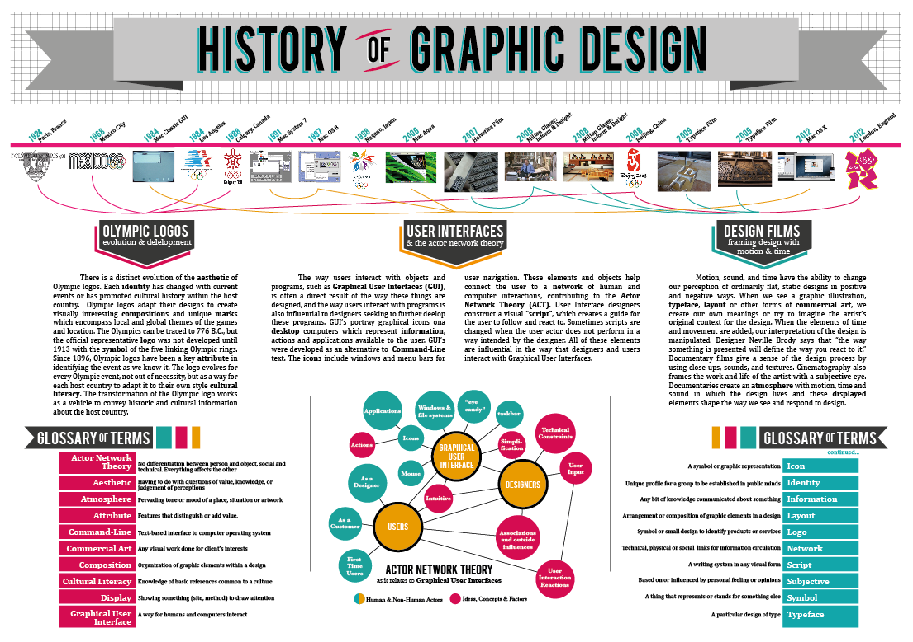

Design: History & Evolution.
Marc Urbealis ~ October 21st, 2023.
Historical Evolution of Design
Design has undergone a fascinating evolution, shaped by cultural, technological, and artistic movements. From the intricate illuminations of medieval manuscripts to the geometric precision of the Bauhaus movement, design has been a reflection of its time. The 20th century witnessed the rise of iconic graphic design with the works of artists like Saul Bass and Paul Rand, who crafted timeless logos for major brands. The postmodern era brought forth a playful exploration of eclectic styles, challenging traditional design norms.
~ Notable Examples:
1. Bauhaus Movement (1919-1933): Known for merging crafts and fine arts, Bauhaus had a profound influence on modern design. The movement's principles of simplicity, functionality, and harmony remain influential.
2. Swiss Style (International Typographic Style): Emerged in the 1950s, characterized by grid-based layouts, sans-serif typefaces, and clarity. Designers like Max Miedinger, creator of Helvetica, played pivotal roles..
First Ever Digital Design
The advent of digital design can be traced back to the early days of computing. In the 1960s, Ivan Sutherland and his student David Evans developed the first computer-based graphical system called "Sketchpad." This revolutionary system allowed users to interact with a computer using a light pen and create graphical images directly on the screen. Sketchpad laid the foundation for computer-aided design (CAD) and is considered a milestone in the history of digital design.
Pioneering Digital Designs:
1. Sketchpad (1963): Ivan Sutherland's groundbreaking software allowed users to manipulate graphical objects on a computer screen, introducing the concept of interactive computer graphics.
2. Digital Typography (1984): Donald Knuth's TeX system marked a significant step in digital typography, providing a typesetting system for complex mathematical and scientific documents.
Noteworthy Digital Design Innovations
Over the years, digital design has experienced transformative innovations. Adobe's introduction of Photoshop in 1988 revolutionized image editing, and the emergence of vector-based software like Adobe Illustrator provided designers with unprecedented control over shapes and typography. The 3D design landscape evolved with tools like AutoCAD, opening up possibilities in architecture and industrial design.
Innovative Digital Designs:
1. Adobe Photoshop (1988): Altered the landscape of digital image editing, enabling designers to manipulate and enhance photographs.
2. AutoCAD (1982): Transformed architectural and industrial design by introducing computer-aided design tools for 2D and 3D drafting.
Out-of-the-Box Perspectives on Design
Embracing an out-of-the-box perspective involves challenging conventions and exploring unconventional approaches to design. Street art, guerrilla marketing campaigns, and interactive installations have pushed the boundaries of traditional design. The Dada movement in the early 20th century, known for its anti-art stance, questioned established norms and inspired later generations to think creatively and provocatively..
Examples of Unconventional Design:
1. Banksy's Street Art: Banksy's anonymous street art challenges societal norms and often carries political messages, showcasing how public spaces can be platforms for unconventional design.
2. Dada Movement (1916-1922): Rejecting logic and reason, Dadaists embraced chaos and nonsense in art, paving the way for unconventional approaches that questioned the role of art in society.
Revolution of Design in the Digital Age:
The digital age has propelled design into new dimensions, transforming how we perceive, create, and interact with visual elements. Responsive web design, born out of the need for cross-device compatibility, became a pivotal standard. The rise of user experience (UX) and user interface (UI) design solidified the importance of creating seamless, intuitive digital interactions. Platforms like Behance and Dribbble emerged as online communities, connecting designers globally and fostering the sharing of ideas and inspirations. The digital age not only expanded the canvas for designers but also introduced a more collaborative and interconnected design ecosystem.
Influential Digital Designs:
1. Apple iPhone (2007): The iPhone's interface revolutionized mobile design, introducing gestures and touch interactions that set the standard for smartphones.
2. Material Design (2014): Google's design language, emphasizing minimalism, depth, and vibrant colors, became a benchmark for modern UI design.
Out-of-the-Box Perspectives on Design
Embracing an out-of-the-box perspective involves challenging conventions and exploring unconventional approaches to design. Street art, guerrilla marketing campaigns, and interactive installations have pushed the boundaries of traditional design. The Dada movement in the early 20th century, known for its anti-art stance, questioned established norms and inspired later generations to think creatively and provocatively..
Examples of Unconventional Design:
1. Banksy's Street Art: Banksy's anonymous street art challenges societal norms and often carries political messages, showcasing how public spaces can be platforms for unconventional design.
2. Dada Movement (1916-1922): Rejecting logic and reason, Dadaists embraced chaos and nonsense in art, paving the way for unconventional approaches that questioned the role of art in society.
Digital Design in Entertainment and Marketing:
Digital design's impact extends beyond aesthetics, influencing entertainment and marketing strategies. Video games, once limited by pixelated graphics, now boast cinematic visuals and immersive environments. In marketing, the use of motion graphics and interactive content has become ubiquitous. Social media platforms leverage design elements to captivate audiences, emphasizing the power of visual storytelling in shaping narratives and building brand identities.
Examples in Entertainment and Marketing:
1. Fortnite (2017): This video game transcended traditional design boundaries, creating virtual experiences that blend gaming, socializing, and cultural events.
2. Nike's Digital Campaigns: Nike's interactive and visually striking digital campaigns leverage design to connect with audiences, showcasing the brand's commitment to innovation.
Human-Centered Design and Inclusivity:
Human-centered design has gained prominence, placing the user at the core of the design process. Inclusivity has become a central theme, with designers striving to create solutions that cater to diverse needs. The principles of accessibility are integrated into design practices, ensuring that digital and physical spaces are welcoming and usable for individuals with varying abilities.
Advancements in Human-Centered Design:
1. Inclusive Design Principles: The application of inclusive design principles ensures that products and services are accessible to individuals of all abilities, recognizing diversity in user experiences.
2. User Persona Development: Creating detailed user personas helps designers empathize with diverse user groups, leading to more inclusive and user-friendly designs.
The Convergence of Design and Sustainability:
In response to environmental concerns, the design industry has embraced sustainability as a guiding principle. Designers are adopting eco-friendly materials, minimizing waste, and creating products and experiences that prioritize environmental impact. Sustainable design goes beyond aesthetics, influencing the entire lifecycle of products, from production to disposal.
Sustainable Design Initiatives:
1. Circular Design Practices: Implementing circular design principles involves creating products with materials that can be reused or recycled, minimizing the environmental footprint.
2. Green Architecture: Sustainable architecture incorporates eco-friendly elements, such as energy-efficient systems and green spaces, into building design.
Artificial Intelligence in Design:
The integration of artificial intelligence (AI) in design processes is opening new frontiers. AI algorithms analyze user behavior, predict trends, and generate design elements autonomously. While AI augments efficiency, it also sparks debates around the role of machines in creative processes and the potential ethical implications of relying on automated design solutions.
AI-Driven Design Innovations:
1. Generative Design: AI-powered generative design tools assist designers in creating numerous design iterations based on specified parameters, optimizing for performance and aesthetics.
2. Predictive Design: AI algorithms analyze data to anticipate user preferences, influencing design choices in areas like personalized content recommendations.
Conclusion:
The journey through the history and evolution of design reveals a dynamic narrative shaped by creativity, technology, and societal changes. From the pioneering days of Sketchpad to the intricacies of sustainable and AI-driven design, the design landscape has continually adapted and expanded. As we navigate the intersections of digital and physical realms, embrace inclusivity, sustainability, and explore the potentials of artificial intelligence, the future promises a fascinating era of creativity and innovation. The design community stands at the threshold of endless possibilities, where the fusion of traditional principles with emerging technologies paves the way for a vibrant and ever-evolving design landscape in the years to come.